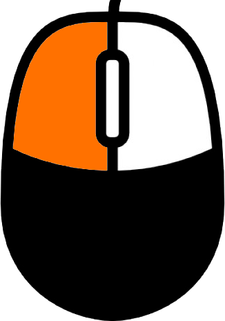

«Rose Del Mare»
У самого Черного моря, на берегах южной столицы России, на улице Роз строится новый жилой комплекс бизнес-класса «ROSE DEL MARE».
У самого Черного моря, на берегах южной столицы России, на улице Роз строится новый жилой комплекс бизнес-класса «ROSE DEL MARE».
- Движение вперед
 - Движение вправо
- Движение вправо
- Движение назад
- Движение влево
 - Удерживайте колесико мыши для поворота камеры
- Удерживайте колесико мыши для поворота камеры
 - ЛКМ открыть/закрыть дверь